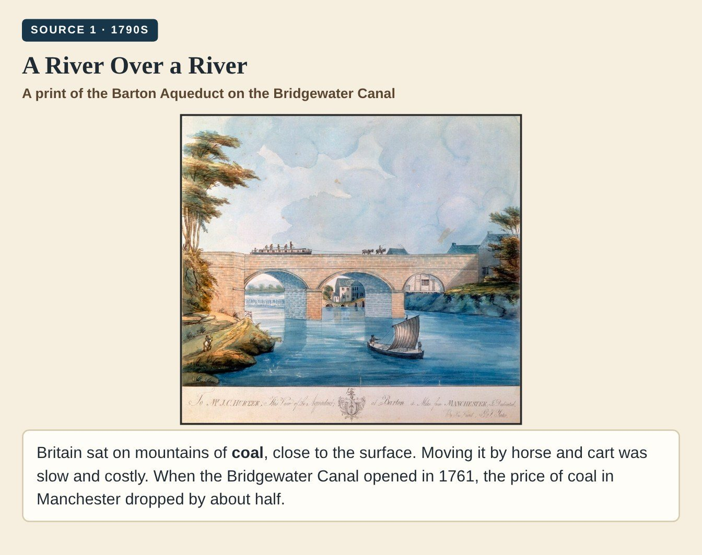

How it works: read the source pages → answer the question about today's big idea → read the fact file → write 1–2 sentences. Done = all parts green, then turn in at the bottom.
Word help (tap to open)
- Industrial Revolution = the shift from making things by hand to making them with machines
- Canal = a human-made waterway for boats
- Factory system = many workers and machines under one roof
- Capital = money to invest in a business
- Primary source = something made by people who lived at the time: a letter, a speech, a picture, a law

Click the page to make it bigger.
Turn in your work
Your work saves on this device, so you can come back later. Your teacher sees it after you turn it in.
Sources: Barton Aqueduct on the Bridgewater Canal (print, 1790s); Richard Marsden, Cotton Spinning (1880s), drawing of a spinning jenny; Matthew Boulton, as quoted by James Boswell (1776); Boulton & Watt steam engine engraving; William Wyld, Manchester from Kersal Moor (1852). Images public domain, via Wikimedia Commons.